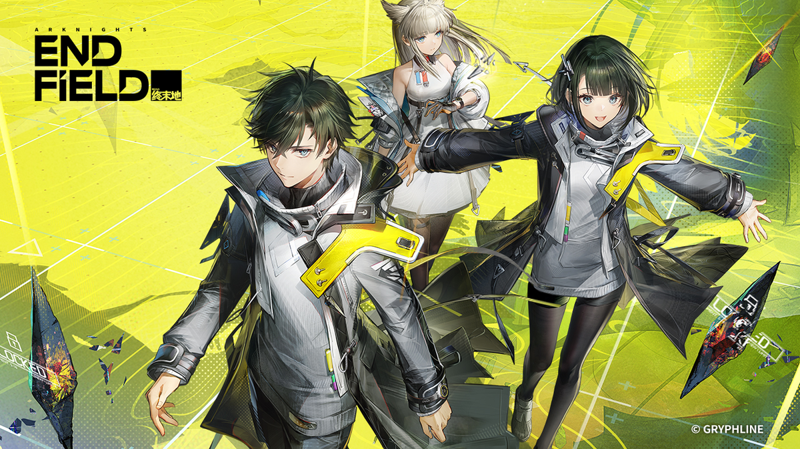
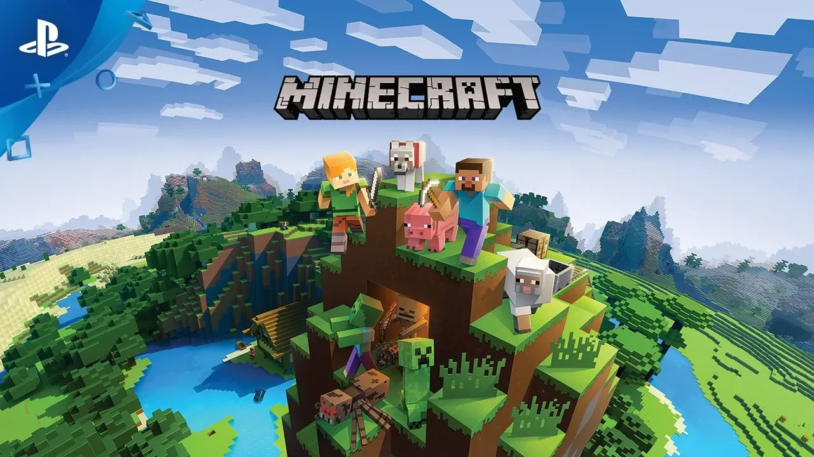
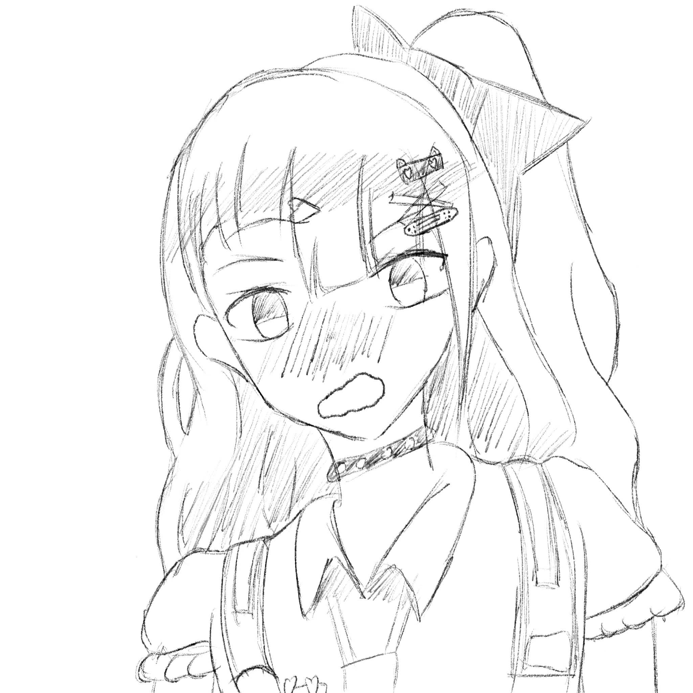
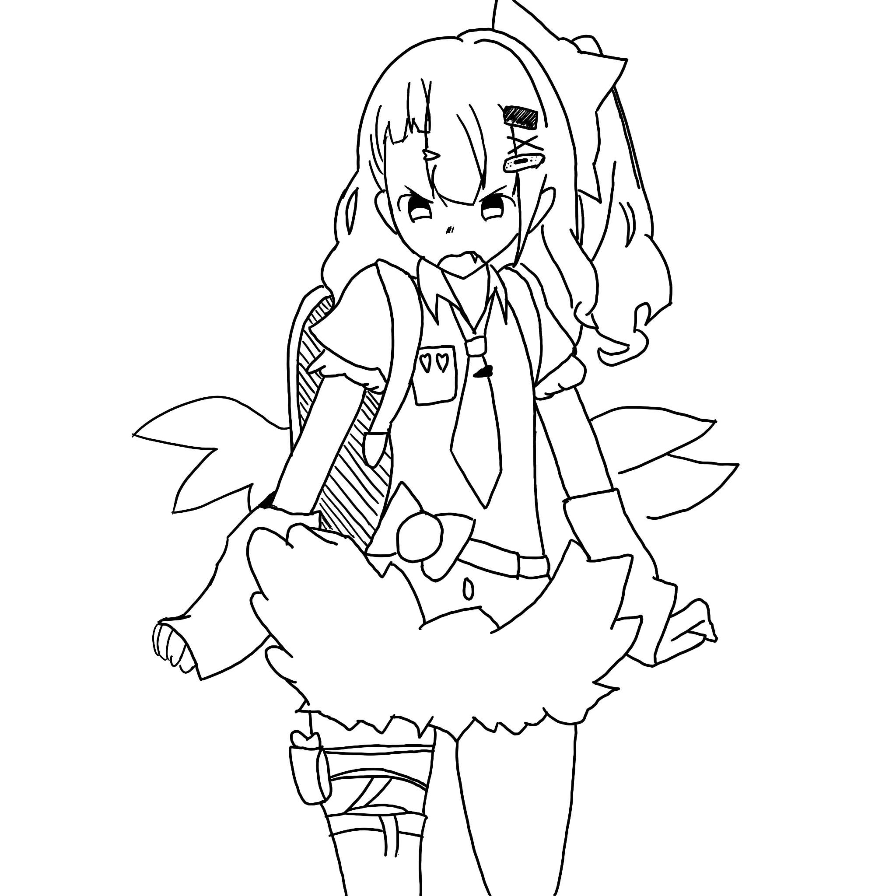
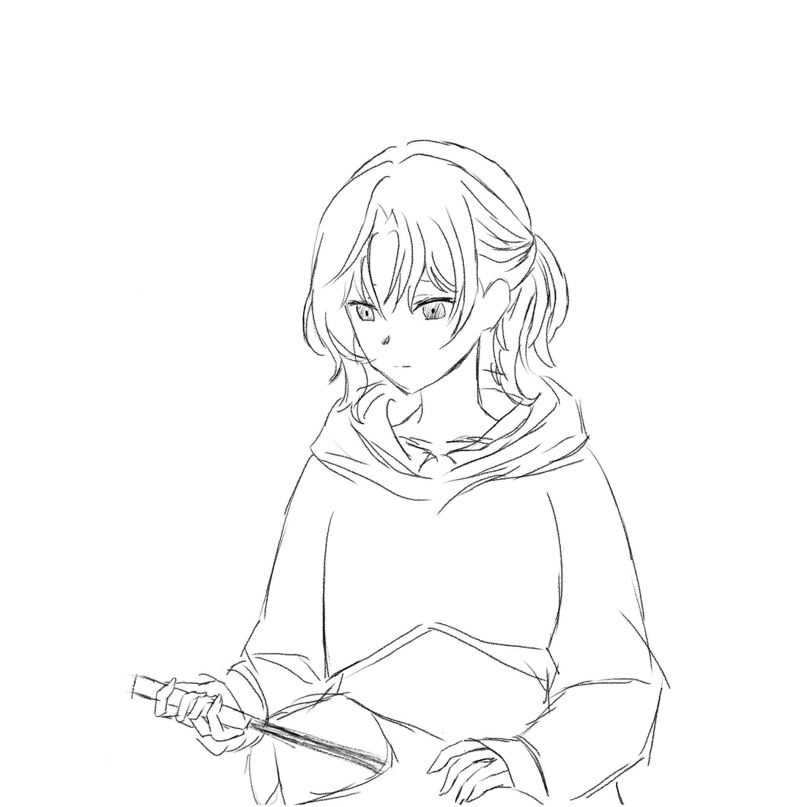
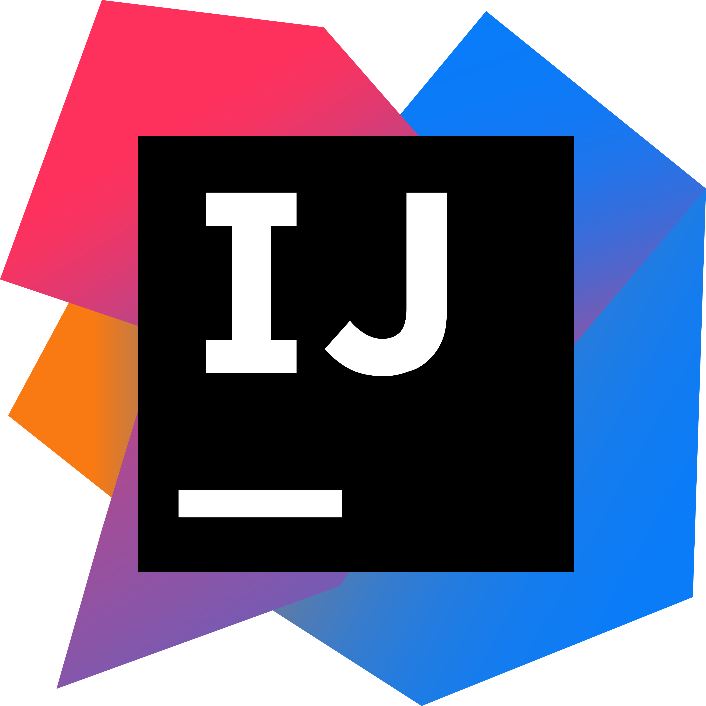

My interest
Gaming





My Experience with Gaming
Gaming is a big part of me, and is what also defines me as a person. Games are a big inspiration and also what gave me most of my personality. A list of a few games that has inspired me.
- Genshin Impact - For introducing me to gacha games.
- Arknights Endfield - For its characters and world building.
- Team Fortress 2 - For introducing me to competitive shooters.
- Minecraft - For giving me the freedom to be creative.
- Roblox - For introducing me to programming my own games.
Art

Sunna - ZZZ

Sunna - ZZZ

Mafuyu - PJSK
My Experience With Art
Art has become one of my hobbies and a medium for me to vent out emotion. Art is an amazing expression of human emotion. I'm able to draw characters who I relate to because of it.
Programming
My experience in programming
Programming has always been an interest of mine, I love computers and have always been interested on learning on how they operate. I also love the creativity people have when creating games and it inspired me to try and make my own. I also love the idea of working in cybersecurity because I've always been interested on how we can be protected on the internet.
Things I use
